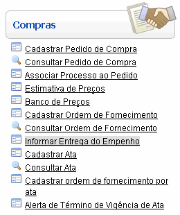
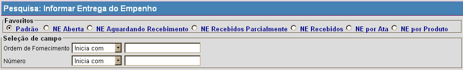
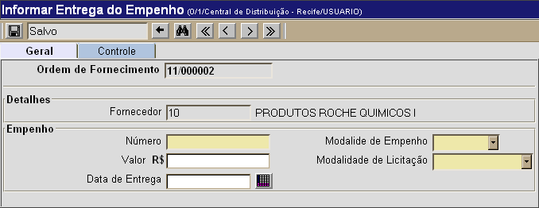

Informar Entrega do Empenho [ Voltar ]Utilize esta tela para cadastrar no sistema um empenho associado a uma ordem de fornecimento. O formulário "Informar Entrega do Empenho" encontra-se dentro do menu "Compras". 
Ao clicar no formulário, o sistema exibirá a seguinte tela: 
Para registrar um empenho, siga os passos abaixo: 1º Passo: localize e selecione com um clique a ordem de fornecimento desejada. Na tela de pesquisa da tela "Informar Entrega do Empenho", são exibidos favoritos e filtros para fácil localização da ordem de fornecimento desejada. Selecione um dos favoritos disponíveis para refinar os resultados da pesquisa: Padrão, NE Aberta, NE Aguardando Recebimento, NE Recebidos Parcialmente, NE Recebidos, NE por Ata ou NE por Produto. Você pode também utilizar os filtros disponíveis da tela para restringir a busca. Informe os dígitos iniciais da ordem ou os dígitos iniciais do empenho para que o sistema retorne automaticamente todas as ordens correspondentes. Para mais informações sobre outros recursos e funcionalidades da pesquisa, favor ver o manual Introdução ao Sistema. Após selecionar a ordem desejada com um clique, a seguinte tela será aberta: 
2° Passo: informe os detalhes do empenho. Os campos em amarelo são obrigatórios. 3° Passo: clique no botão |
 para salvar os dados
registrados.
para salvar os dados
registrados.